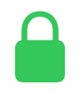

⚠️ Pre-release — subject to change
Messages & Channels
Meshtastic uses a channel system for group broadcasts and direct messages for private one-to-one conversations.
Channels
Channel Index
| Symbol |
Meaning |
| 0 (primary circle) |
Primary channel — broadcast packets are sent here. Location data is broadcast from the first channel where it is enabled (firmware 2.7+). |
| 1–7 |
Secondary channels — separate messaging groups, each secured by their own key. |
Channel Security
| Icon |
Meaning |
 |
Securely Encrypted — the channel uses a 128-bit or 256-bit AES key. |
|
Not Securely Encrypted — the channel uses no key or a 1-byte known key, but is not used for precise location data. |
|
Insecure with Location — the channel is not securely encrypted and is used for precise location data. |
|
Insecure with MQTT — not securely encrypted and precise location data is being uplinked to the internet via MQTT. |
Tip — Share Channels
A QR code contains the LoRa config and channels needed for radios to communicate. Use Replace Channels to overwrite or Add Channels to append to existing channels.
Tip — Manage Channels
The primary channel handles broadcast traffic. Add secondary channels for separate messaging groups, each secured by their own key.
Tip — Administration Enabled
Select a node from the drop-down to manage connected or remote devices.
Direct Messages
Contacts
| Element |
Meaning |
|
Favorites — favorited contacts and nodes with recent messages appear at the top of the contact list. |
|
Long Press Actions — long press to favorite or mute the contact, or delete a conversation. |
Encryption
| Icon |
Meaning |
|
Shared Key — direct messages are using the shared key for the channel. |
|
Public Key Encryption — direct messages use the public key infrastructure for encryption. Requires firmware 2.5 or later. |
|
Public Key Mismatch — the most recent public key for this node does not match the previously recorded key. Verify who you are messaging with by comparing public keys in person or over the phone. |
Tip — Messages
Send channel broadcasts and direct messages. Long press any message for actions like copy, reply, tapback, and delivery details.
Message Status
| Colour |
Meaning |
| Grey |
Successful delivery. |
| Orange bubble |
Acknowledged by another node — message was relayed but not confirmed by the final recipient. |
The following errors may appear on a message bubble (red unless noted):
| Status |
Description |
| No Route |
No route was found to the destination node. |
| Got NAK |
The destination node explicitly rejected the message. |
| Timeout |
The message timed out waiting for acknowledgement. |
| No Interface |
The radio interface is unavailable. |
| Max Retransmit |
Maximum retransmission attempts reached without success. |
| No Channel |
The specified channel does not exist on the destination. |
| Too Large |
The packet exceeds the maximum allowed size. |
| No Response |
No response received from the destination. |
| PKI Failed |
Public key infrastructure encryption/decryption failed. |
| Bad Request |
Malformed packet rejected by the destination. |
| Not Authorized |
The destination node refused the request due to permissions. |
Grey indicates successful delivery. Orange indicates a retryable error. Red indicates a permanent failure that will not succeed on retry.